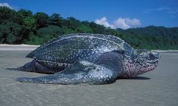
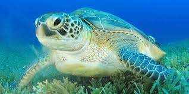
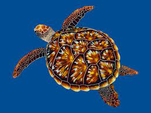
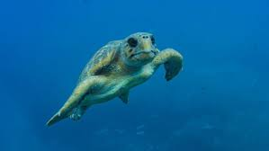
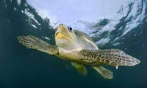

Every ocean in the globe is home to seven different kinds of sea turtles. Six of the seven species, from leatherbacks to loggerheads, are endangered or vulnerable due to human activity. You can read more about each species' biology, ecology, dangers, and geographic distribution in the sections below.
Leatherback Sea Turtles

The leatherback turtle is the biggest sea turtle and one of the biggest reptiles on earth. It may grow to a length of 4 to 8 feet (1.2 to 2.4 meters), weighs 500 to 2,000 pounds (225 to 900 kg), and measures between 225 and 900 kilograms. The typical adult is between 5 and 6 feet (1.5 and 1.8 meters) tall and weighs 600 to 800 pounds (270 to 360 kilograms).
It has existed for more than 150 million years and is the oldest species of sea turtle. They prospered up until the final few decades, when interactions with humans caused significant damage, after the dinosaurs went extinct.
When eating primarily on soft-bodied invertebrates like tunicates and jellyfish, leatherbacks can ingest nearly their whole body weight in prey per day (about 73% of their weight).
Their mouth and throat include downward-curving spines, or papillae, that aid in capturing and swallowing prey.
These enormous sea turtles do not have a carapace (shell) coated in hard scales, commonly known as scutes, like all other sea turtles. Their flexible bone matrix is covered by smooth, leathery skin. Unlike other species, they can dive to vast depths thanks to their unique, flexible carapace.
DISTRIBUTION
Of all the marine turtle species, leatherbacks have the greatest geographic range. The Pacific, Atlantic, and Indian oceans are all home to them. Their range in the Pacific reaches as far north as Alaska and as far south as New Zealand's southernmost tip.
They can be found in the Atlantic as far south as the tip of Africa and as far north as Norway and the Arctic Circle. Their primary habitat is the open ocean, but they travel to tropical and subtropical coastal areas to breed and lay their eggs.
MAJOR THREATS
In the previous two decades, the population of the Pacific has decreased by nearly 90%, mostly as a result of becoming entangled in longlines and gillnets used in commercial fishing. Additionally, their eggs are eaten all throughout the world.
These extinct animals are susceptible to ingesting floating marine detritus, such as used plastic. When swallowed, plastic bags and balloons may obstruct their digestive tract, stopping them from eating because they mimic their preferred meal, jellyfish.
The Green Sea Turtle

The leatherback sea turtle is the largest, followed by the green sea turtle. They can grow to a length of four feet and a weight of up to 500 pounds (225 kg). The adult consumes sea grasses, seaweeds, algae, and other types of marine plant life as a herbivore. Their sharp, highly serrated beak is ideal for scraping algae off of hard surfaces and for grazing in seagrass beds.
Only this species regularly visits the seaside to sun itself. Only in Hawaii, namely the Northwestern Hawaiian Island Chain, the Galapagos Islands, and some regions of Australia does basking occur.
The health of the seagrass beds and related microhabitats is thought to be enhanced by these turtles. The tops of the leaf blades will be removed as they graze the beds, but they will avoid the roots. With a daily trim, the seagrass will grow more quickly and healthily!
Some experts think that some green turtles in the Eastern Pacific, which are now classified as Pacific black turtles, may actually represent a different species rather than a subspecies. Although they are not black in color, they appear darker overall because their skin pigmentation is darker than that of other green turtles. Additionally, they are smaller, and the shape of their carapace is slightly different.
Contrary to popular belief, their name comes from the color of their fat, not their shell.
Contrary to popular belief, their name comes from the color of their fat, not their shell.
The IUCN Red List classifies them as Endangered both domestically and internationally.
Chelonia mydas is their official scientific name.
DISTRIBUTION
There are significant nesting beaches for this species in Tortuguero (Costa Rica), Oman, Florida, and Raine Island (Australia), where thousands of turtles lay their eggs each night during the prime nesting season. In addition to the Northwestern Hawaiian Islands, Guam, American Samoa, Suriname, Georgia, South Carolina, North Carolina, Puerto Rico, and the US Virgin Islands, they are also known to nest on French Frigate Shoals.
MAJOR THREATS
The main cause of population reductions is the collection of their meat and eggs for human use. Fibropapilloma, often known as FP, is a condition marked by lesions and quick tumor growth on the soft tissues of the lips, eyes, and body, as well as internal organs. Their populations have been severely impacted by FP, which is thought to be linked to ocean pollution, particularly in Florida and Hawaii, but also in the Caribbean and Australia.
Ingestion of plastic, boat collisions, coastal development, the destruction of feeding habitats, and entanglement in fishing gear are other hazards.
Hawksbill Sea Turtles

The hawksbill sea turtle, which is found in tropical regions all over the world, is regarded by many as the most beautiful of all sea turtles because of its vibrant shell. They spend their time in lagoons, mangrove forests, marine islands, coral reefs, and rocky places.
Hawksbills are so named because they can reach into the cracks and crevices of coral reefs in search of food. They have a narrow head and a pointed, bird-like beak. Their diet is quite specialized, and they eat virtually nothing except sponges. One of the smaller turtles, adults can grow to a length of 2-3 feet (roughly.5 to 1 meter) and weigh between 100 and 200 pounds (45 and 90 kg). Find out more about what they eat.
These turtles lay their eggs alone and sparsely on small, dispersed beaches. In order to get to hidden nesting places, adult females are well adapted to crawling through reefs and rocky terrain.
They lay about 140 eggs per nest, on average, four times per season at intervals of two weeks. However, nests can have over 200 eggs in them!
The IUCN Red List rates hawksbills as Critically Endangered around the world and Endangered in the US. According to some scientists, the hawksbill sea turtle population in the Eastern Pacific is probably the most endangered in the world.
DISTRIBUTION
The Atlantic, Pacific, and Indian Oceans are home to this species, which lives in tropical and some subtropical areas. The Caribbean Sea, the Seychelles, Indonesia, Mexico, and Australia have the biggest populations. Few hawksbills can be found in US seas in the Mediterranean, and only a few nest in Florida each year.
MAJOR THREATS
In the past century, their population has decreased by more than 80%, largely as a result of the trade in their exquisite carapace (shell), also known as "tortoiseshell." Brightly colored and decorated with elaborate patterns, its carapace is exported internationally for aesthetic purposes. The shell is employed for jewelry, combs, brushes, furniture inlays, and other decorative products.
Before the tortoise trade was outlawed, hawksbill turtles were almost hunted to extinction; Japan imported an estimated 2 million turtles between 1950 and 1992. Despite the fact that their shells can no longer be traded internationally, a robust black market nevertheless exists.
Coastal development, pollution, boat hits, entanglement in fishing gear, eating of their flesh and eggs, and destructive fishing techniques like dynamite fishing are some of the other dangers to these species. Explosives are used in dynamite fishing to stun or kill fish, mainly on reefs, making them easier to catch. Additionally, the practice seriously damages adjacent wildlife as well as coral reefs. This destructive form of fishing is still common in Southeast Asia, the Aegean Sea, El Salvador, and Africa despite being outlawed.
Loggerhead Sea Turtles

The loggerhead turtle, one of the bigger sea turtle species, can grow to a length of 4 feet (1.2 meters) and weigh between 200 and 400 pounds (90 and 180 kg). They can be found all across the temperate and tropical Pacific, Indian, and Atlantic Oceans.
Their big head and powerful crushing mouth (right) that allow them to consume hard-shelled prey like crabs, conchs, and whelks make them one of the most prevalent species in the US.
One population of these turtles breeds in Japan and migrates across the entire Pacific Ocean to the abundant feeding grounds off the coast of Baja California Sur, Mexico, where they spend several years foraging and maturing.
DISTRIBUTION
There are loggerhead turtles in every ocean in the world. The distribution of leatherbacks is the widest. On Masirah Island, off the coast of Oman in the Middle East, the majority of nesting takes place. Their primary breeding locations in the Pacific are in Japan and Australia. Florida is where the majority of the concentration is in the Atlantic. They nest on beaches in Greece, Turkey, and Israel and are the most prevalent species in the Mediterranean.
MAJOR THREATS
The main danger to them is getting caught in commercial fishing gear, such as trawls, longlines, gillnets, traps, and pots, which is also referred to as "bycatch". Devices known as TEDs, or Turtle Excluder Devices, are mandated by law in the US trawl fisheries. Sea turtles can use these devices to break free from nets, but they are not regulated in other parts of the world, where they are still being trapped.
Olive Ridley Sea Turtles

Olive ridley turtles are the second-smallest after Kemp's ridley turtles, measuring 2-2 12 feet (roughly.6 m) in length and weighing between 75 and 100 pounds (34 and 45 kilograms). They are the most prevalent species of sea turtle and get their name from their light green carapace.
Similar to the Kemp's ridley, olive ridleys build a collective nest known as a "arribada." Thousands of females may nest during arribadas, which typically occur once every month for p. Adults begin to develop their sexuality around the age of 15.
Olive ridley arribadas are only found in a small number of locations worldwide (sites are listed in the Distribution section below). They are solitary nesters in other parts of the planet.
Though the timing of arribadas is not fully known, it is believed to correspond with weather conditions like strong winds or cloudy days as well as with moon and tidal cycles. Before simultaneously coming ashore to lay their eggs, the turtles gather in big numbers offshore of nesting beaches. Throughout the nesting season, females may hang out offshore near nesting beaches.
These turtles are omnivores and consume a wide range of prey, such as fish, jellyfish, urchins, shrimp, and lobster. Their favored prey is the red crab, which is common in offshore seas of Baja California, Mexico. Find out more about what they eat.
DISTRIBUTION
Olive ridleys can be found all over the world, however they are most frequently seen in the tropics of the Pacific, Indian, and Southern Atlantic Oceans. They are predominantly pelagic, spending the majority of their lives in the open ocean, but they can also be found in bays and estuaries as well as sections of the continental shelf.
Arribadas can be found in Mexico, Nicaragua, Costa Rica, Panama, Australia, some regions of Africa, and on a few Indian Ocean beaches. The biggest ones are found in India, Mexico, and Costa Rica. La Flor Wildlife Refuge is a notable beach in Nicaragua. Guatemala, Brazil, Myanmar, Malaysia, and Pakistan are additional locations for solitary nesting. They nest in about 40 nations throughout the world.
MAJOR THREATS
The direct taking of turtles and their eggs for human consumption, the entanglement of turtles in commercial fishing gear, and coastal development are all threats to olive ridleys.